引言：
随着生物医学的飞速发展，干细胞治疗作为一种前沿的医疗技术，正逐渐成为多种难治性疾病的新希望。干细胞具有自我更新和多向分化的潜能，为诸多传统疗法束手无策的疾病提供了新的治疗思路。

About Us
关于百年春
引言：
随着生物医学的飞速发展，干细胞治疗作为一种前沿的医疗技术，正逐渐成为多种难治性疾病的新希望。干细胞具有自我更新和多向分化的潜能，为诸多传统疗法束手无策的疾病提供了新的治疗思路。
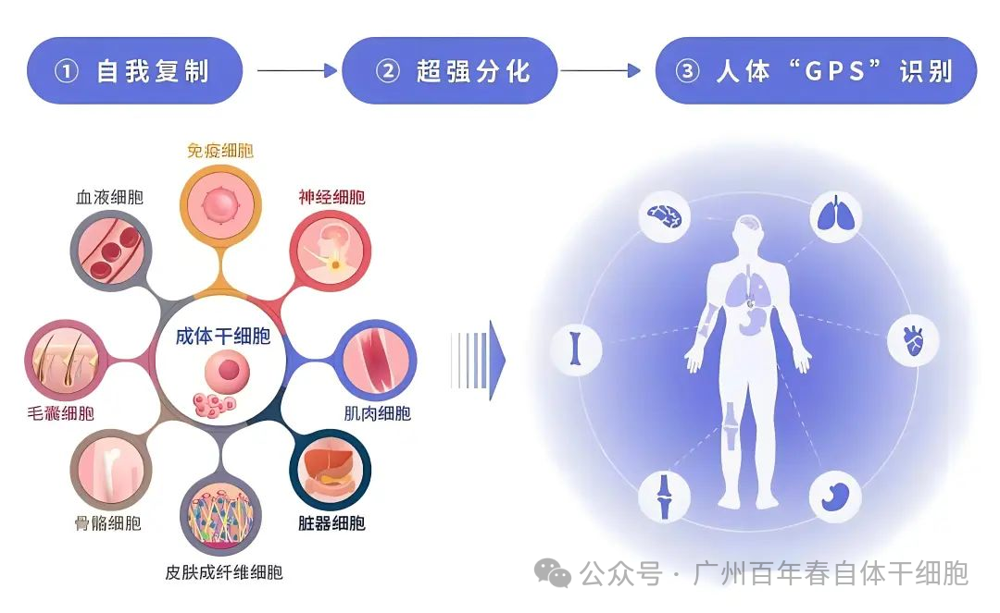
干细胞，被誉为生命的原始材料。从神经退行性疾病到心脏病，从糖尿病到自身免疫性疾病，干细胞治疗正不断拓展其治疗领域。各种类型的干细胞，包括造血干细胞、间充质干细胞和诱导多能干细胞，已被用于临床试验和治疗。
以下是干细胞干预疾病的清单：
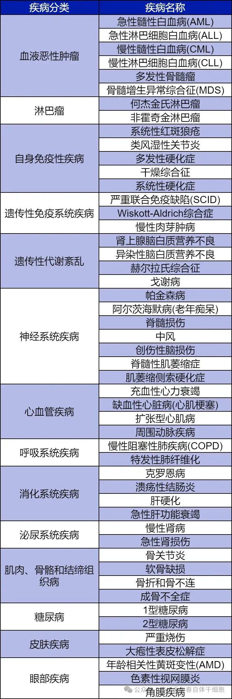
在这份清单中，我们可以看到，干细胞治疗已经在多个领域取得了显著成果。
干细胞在疾病治疗领域的卓越表现
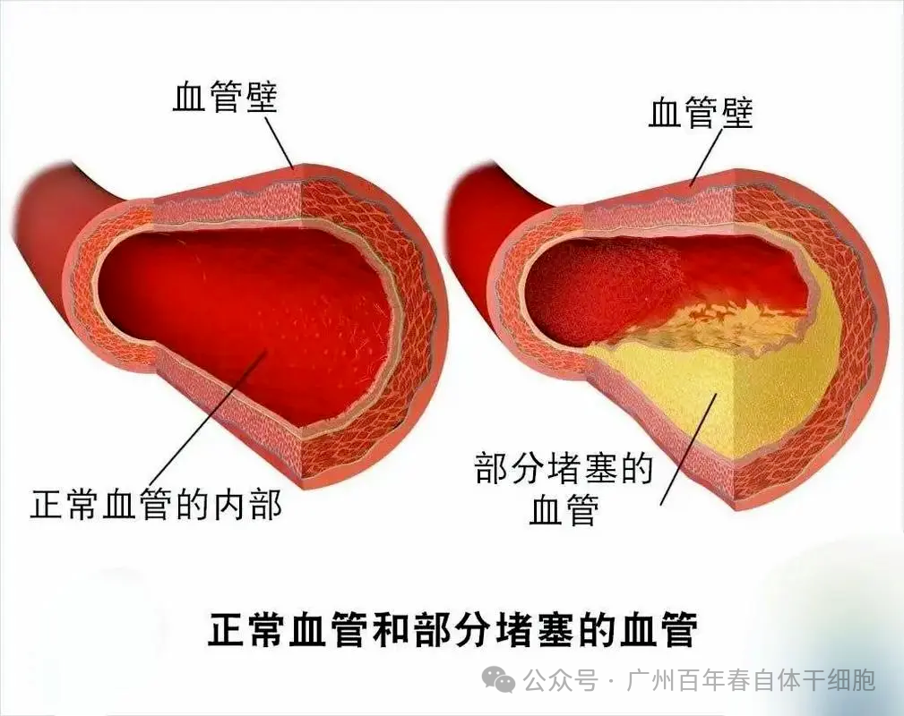
干细胞治疗心血管疾病是一种创新的医疗手段，对于心肌梗死、动脉粥样硬化等心血管疾病具有显著疗效。有研究显示，在心肌梗死模型中，干细胞移植能有效促进心肌细胞的再生和修复，改善心功能。
例如，一项针对心肌梗死的临床试验表明，通过冠状动脉内注射干细胞，可以显著提高患者的心功能和生活质量。此外，干细胞治疗还在动脉粥样硬化等疾病中取得了积极的研究成果。近年来，多项研究表明干细胞在治疗心脏病方面具有显著效果。
通过注射干细胞，可以有效促进心肌细胞的再生，改善心脏功能。一项发表在《欧洲心脏病学杂志》上的研究显示，经过干细胞治疗的患者，其心脏功能和生活质量均得到了显著提升。
这些成功案例充分证明了干细胞在心血管疾病治疗中的广阔应用前景，为心血管疾病患者带来了新的治疗选择。
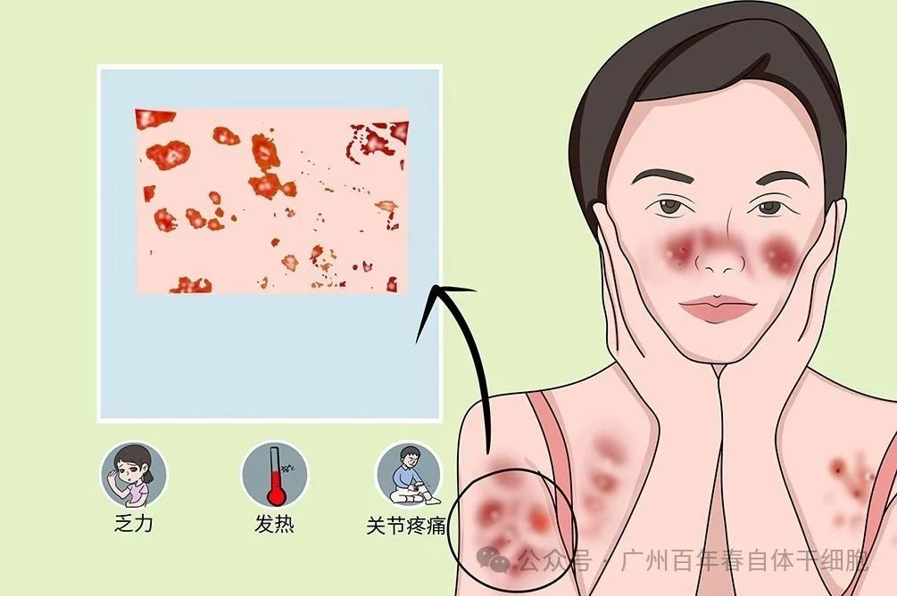
自身免疫性疾病如系统性红斑狼疮（SLE）、类风湿性关节炎（RA）等，是由于免疫系统攻击自身组织而导致的疾病。
干细胞治疗通过调节免疫系统的功能，有望减轻炎症反应，缓解病情。多项研究表明，干细胞治疗能够显著降低自身免疫性疾病患者的炎症指标，改善患者的生活质量。
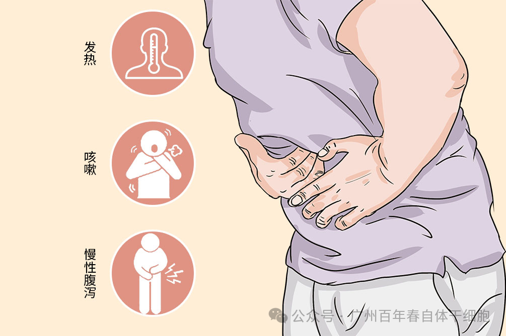
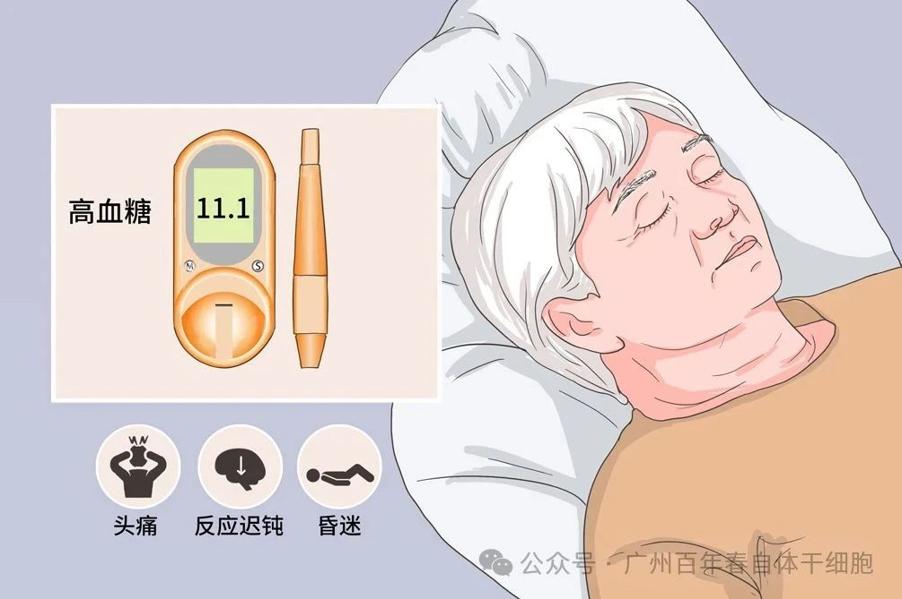
糖尿病是一种常见的慢性疾病，其主要特征是胰岛素分泌不足或胰岛素作用障碍。传统治疗方法往往只能控制症状，难以从根本上治愈。干细胞治疗糖尿病为患者带来了新希望。
干细胞可以分化为胰岛 β 细胞，替代受损的胰岛细胞，恢复胰岛素的正常分泌；同时，它还能调节免疫系统，减轻炎症反应，改善胰岛素抵抗。临床研究显示，部分接受干细胞治疗的糖尿病患者，胰岛素使用量明显减少，血糖控制更加稳定，生活质量得到显著提升 。
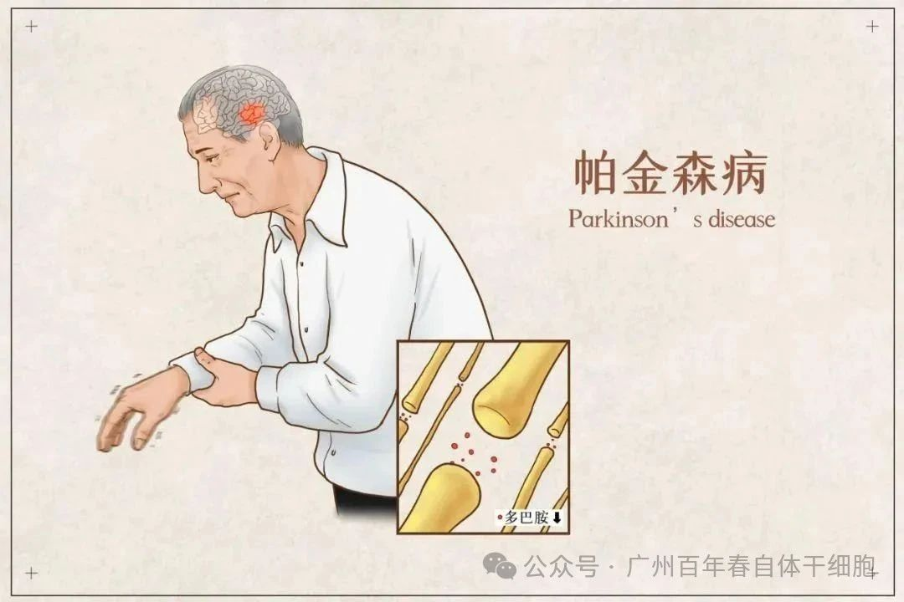
帕金森病是一种神经系统退行性疾病，主要由于大脑中多巴胺能神经元受损导致。
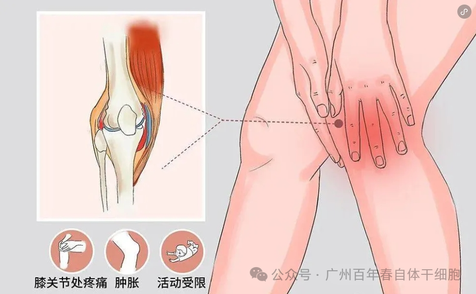
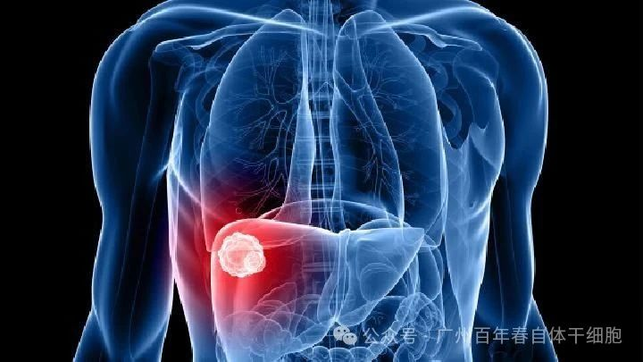
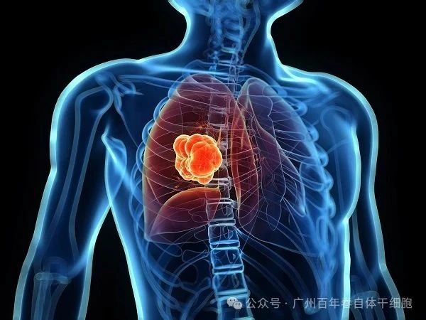
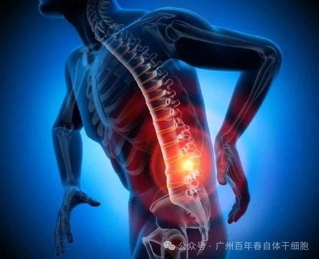
干细胞在体内或体外特定的诱导条件下，可分化为骨、软骨、肌肉、肌腱、韧带、神经等多种组织细胞，作为种子细胞可用于组织器官的损伤修复。使用干细胞治疗患有不同程度瘫痪患者的慢性脊髓损伤。
2009年，医学院的科学家发表了一项涉及39名慢性脊髓损伤患者的研究。他们将干细胞回输至患者体内，随后研究人员表示该疗法是安全有效的，26名患者（66％）的刺激反应有所改善。
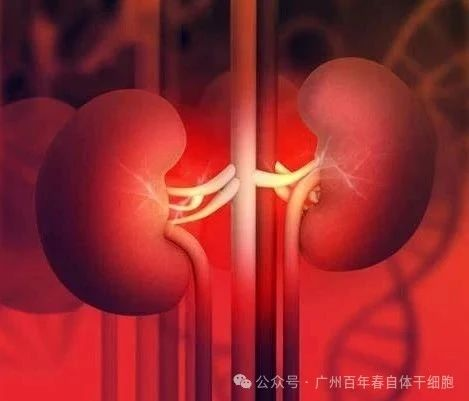
泌尿系统各器官(肾脏、输尿管、膀胱、尿道)都可发生疾病，并波及整个系统。泌尿系统的疾病既可由身体其他系统病变引起，又可影响其他系统甚至全身。
干细胞可以分化出人体泌尿系统的各种功能细胞，如肾小球内的扁平细胞、足细胞、系膜细胞等，新生的这些功能细胞可以替换掉坏死病变的细胞，恢复肾小球的滤过功能和肾小管的重吸收功能，进而恢复泌尿系统的正常生理结构和功能。
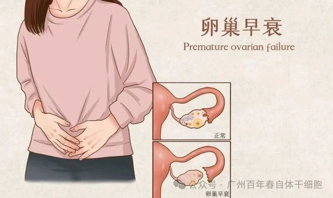
卵巢早衰会导致女性雌激素分泌减少，出现月经紊乱、不孕、早衰等一系列问题。
干细胞可以迁移到卵巢组织，分化为卵巢细胞，促进卵泡发育；还能分泌多种生长因子，改善卵巢的微环境，恢复卵巢的正常功能。众多临床案例表明，干细胞治疗后，部分患者的月经周期恢复正常，雌激素水平上升，生育能力也有了一定程度的恢复。
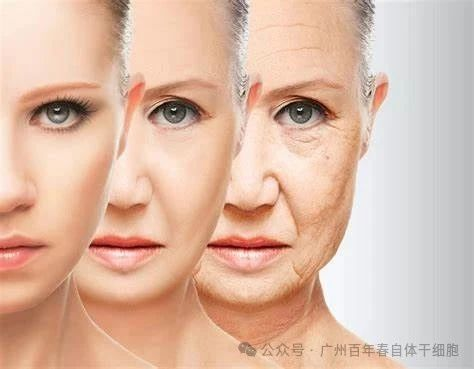
除了疾病治疗，干细胞在抗衰老和改善男性功能障碍方面也展现出巨大潜力。随着年龄增长，人体细胞逐渐衰老，组织器官功能下降。干细胞通过分化为新生细胞，替换衰老细胞，促进身体新陈代谢，改善皮肤状态，增强身体机能，延缓衰老进程。
总结
干细胞以其独特的自我更新和多向分化能力，在抗衰老、改善亚健康、增强免疫力预防疾病等多个领域展现出了令人瞩目的潜力。它为众多难治性疾病提供了全新的治疗思路和方法，也为人们追求更高质量的生活带来了希望。
相信随着科学技术的不断进步，干细胞必将在未来的医学领域发挥更大的作用，为人类的健康和幸福谱写更加辉煌的篇章。